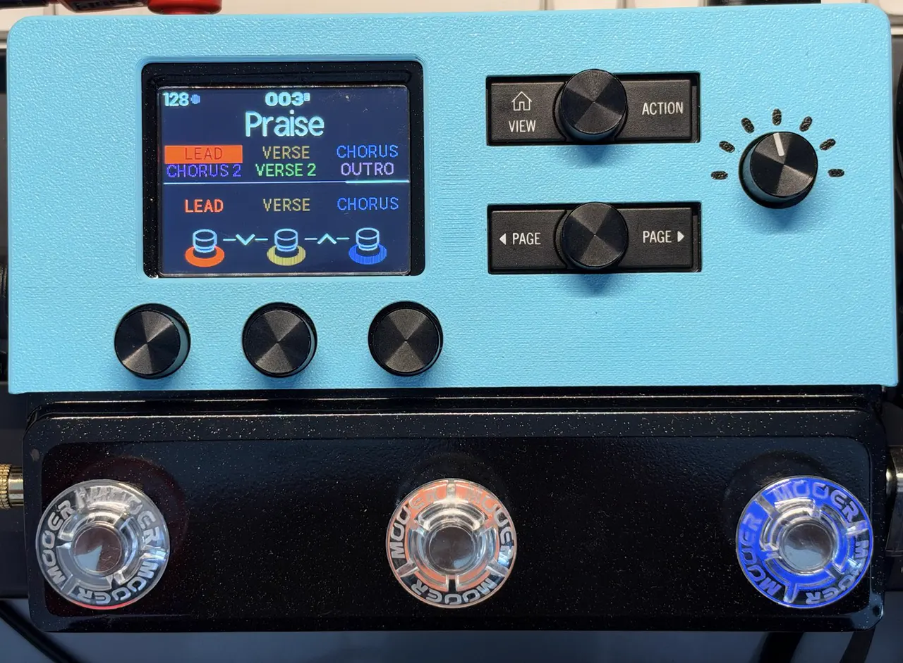
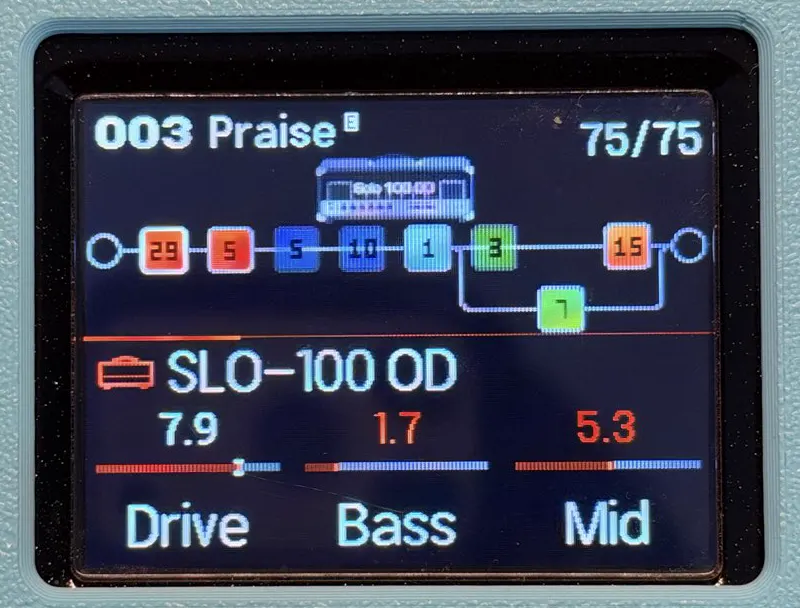
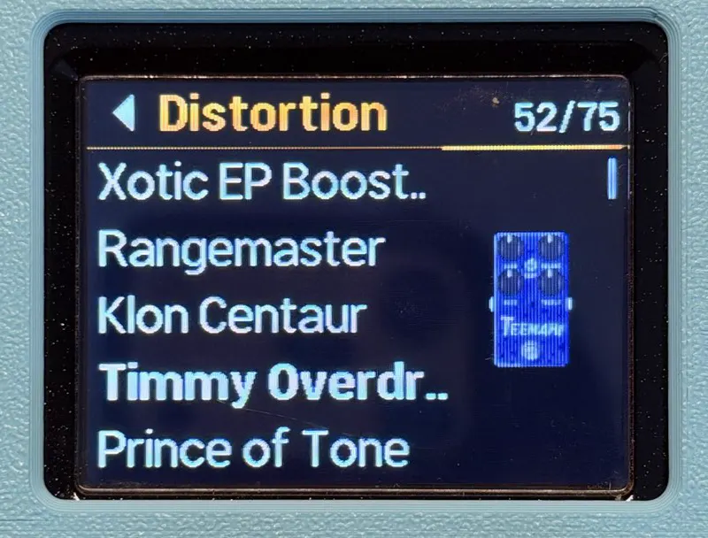
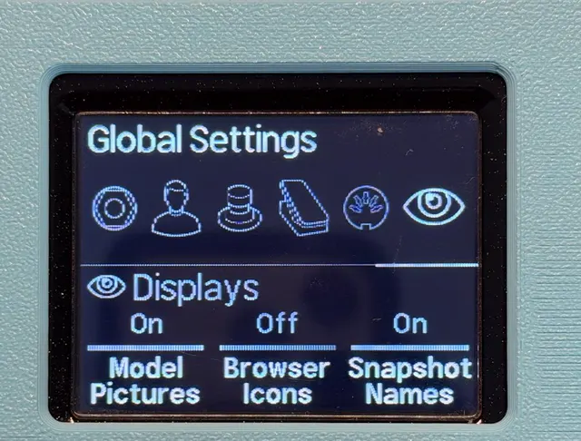
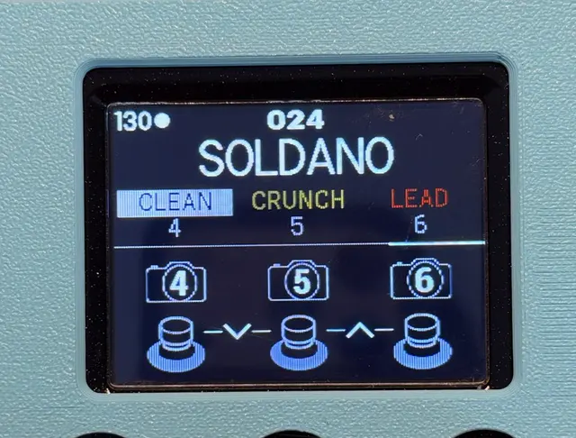
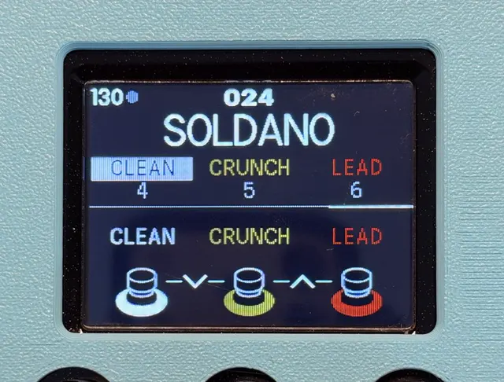
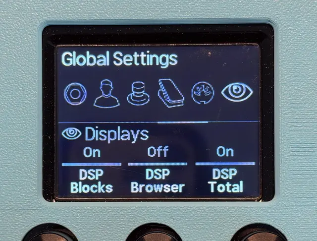
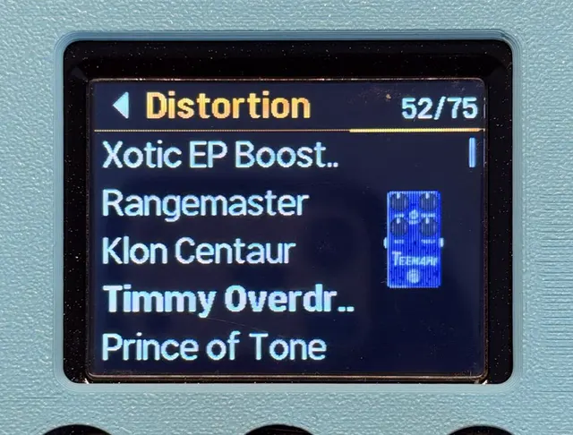

Unofficial and experimental. At your own risk. Recovery puts the stock firmware back.

6snapshots per preset, stock has 3
75DSP total shown in the Edit view and the model browser
5footswitches get a hold function, FS1 to FS5
786models get a picture, with the Model pictures box
Is it safe?
What protects you
If anything goes wrong, the Recovery steps put the stock firmware back.
Installing StompMod doesn't erase anything on your device.
The bootloader is never changed.
The build runs inside this browser tab. Your firmware and captures never leave the computer.
The build checks every checksum, and the page says Verified when your file is byte for byte the tested one.
What you accept
StompMod isn't made or supported by Line 6.
Installing modified firmware is at your own risk and may void your warranty.
It changes a few of the firmware's fifteen parts.
Please don't share the file you build: the firmware is Line 6's.
1
Get ready
Keep this stock file somewhere safe. You also need it for Recovery and to go back to the normal firmware later.
2
Build StompMod
This step builds StompMod from the stock firmware file and gives you the modified firmware file to install.
Boot screen
The picture the HX Stomp shows while it starts. Leave it as it is, or use your own.
loading bar
hidden text
The picture is made 320 x 240 here and stays on this computer. The dashed lines show where the loading bar crosses it and where the firmware paints over its corner to hide the boot text. How the bar looks over your picture can only be judged on the HX Stomp itself.
A picture of the selected block's model in the Edit view and of the model under the cursor in the model browser.
The pictures are HX Edit's own, read from the HX Edit installed on this computer: you pick its res folder, and nothing is uploaded. The build takes about a minute longer with this ticked.
Pick HX Edit's res folder. On Windows it is usually C:\Program Files (x86)\Line6\HX Edit\res; if your browser will not open a system folder, copy the folder somewhere else first. Only HX Edit's model pictures are read.
This copy of the page has no feature code, so it builds NAM A2 Lite and the boot screen only. The page published with each StompMod release has it.
This step needs the page opened from a web address.
You opened the page as a file on your computer, and browsers don't let a file page run the build. Open the online page instead (gatistudio.com/stompmod). It does the same thing and still uploads nothing. (Steps 5 and 6 work either way.)
StompMod is free. If it saved you time, you can support it.Support
Technical details
The first build downloads the build tools (about 15 MB) and takes 20–60 seconds, depending on the computer. Keep this tab open until it finishes.
3
Try it without installing
Optional
Run StompMod from the unit's memory for one session. Nothing is written to the unit and no changes you make will save. Power cycling takes you back to stock.
Your HX Stomp has Line 6's stock firmware 3.80.0 installed.
Use Chrome or Edge on a computer, and quit HX Edit and Line 6 Updater: they hold the USB connection.
Connect the HX Stomp with USB, turn it on and click Run from RAM (below). Pick the HX Stomp in the browser's list. As it restarts, the browser asks twice more: each time, click Continue and pick the device it lists.
If the HX Stomp isn't in the list, turn it off, hold Page › while you turn it on (update mode, dark screen), and click Run from RAM again.
Knobs can react slowly in a RAM run; an installed firmware doesn't do that.
Every StompMod feature was tried this way on a real HX Stomp. On Windows the browser may not see the HX Stomp, because Line 6's driver holds it.
Technical details
4
Install it with Line 6 Updater
The same way as a normal Line 6 update, with your new file.
Install
Close HX Edit, if it's open. Line 6 Updater can't reach the HX Stomp while HX Edit is using it.
Connect the HX Stomp to the computer with USB and turn it on.
Open Line 6 Updater, sign in, and select your HX Stomp.
Choose Choose File (not the normal update) and pick the file you downloaded in step 2:HX_Stomp_v3.80.0_HXtra.hxf
Let it finish. Don't unplug or switch off the HX Stomp while it updates. It restarts on its own when done. This process can take up to 20 minutes.
Check it worked. If the boot screen shows your picture, then congratulations, the setup is complete!
Proceed to steps 5 and 6 only if using NAM.
Stuck on the boot screen after the install? Don't worry: follow Recovery.
5
Convert your NAM captures
Optional
The HX Stomp loads NAM captures from its User IR slots. This turns each .nam into a .wav that HX Edit can import there.
Converted captures appear here. Only the 3-channel A2 Lite size works (on ToneHunt and similar sites, look for “A2 Lite”). A .nam with several sizes in one file works too: its A2 Lite model is used.
The .wav isn't a sound: it carries the capture's 1,871 numbers. Don't load it into a Cab or IR block; it's for the NAM A2 Lite block only!
6
Load a capture and play
Optional
Import the .wav files with HX Edit, then point the NAM A2 Lite block at them.
Open HX Edit with the HX Stomp connected, and open the Impulses list.
Drag a .wav from step 5 onto a free slot. Write down its number, for example 5.
Add a block and pick Amp › NAM › NAM A2 Lite.
Turn Model (the first knob of page 3) to that slot number. You hear the capture.
Knob
What it does
Model
Which capture plays: the User IR slot (1–128) that holds it. A slot with a normal cab IR, or nothing, is silent.
Input
Level into the capture, −20 to +20 dB. 5.0 is the capture's own level.
BassMid Treble
Tone controls after the capture, ±12 dB each. 5.0 is flat. Bass is a low shelf at 150 Hz, Mid a band at Mid Freq, Treble a band at 2.5 kHz.
Mid FreqQ
Where Mid sits, 150 Hz to 3 kHz (650 Hz by default), and how wide it is: Q 0.7 (wide), 1.4 or 2.8 (narrow).
High Cut
A low-pass filter. 10.0 is off; turning it down lowers the cutoff, to 2 kHz at 0.0.
Output
Output level. 5.0 is unchanged; 10 is +12 dB.
Polarity
Normal or Inverted: Inverted flips the output's polarity (phase).
Presets remember the model number, so if you move a capture to another slot, update the presets that use it.
Changing Model, by hand or in a snapshot, switches smoothly with no gap.
Maximum of two NAM A2 Lite blocks, each with its own capture, per preset, all from Amp › NAM. They don't count toward the HX Stomp's limit of two amps.
Each block uses about a quarter of the HX Stomp's DSP, so two leave room for more blocks. With the DSP meter, each block shows its share.
HX Edit shows it as Xenomorph Fuzz, with Xenomorph's knob names: Gain is Input, Tone is Treble, Level is Output, Clipping is Polarity, OscLevel is Bass, OscTone is Mid, MinFreq is Model, MaxFreq is Mid Freq, WaveShape is Q and Sensitivity is High Cut. It keeps NAM blocks and their settings when you move blocks around.
What it adds
Everything below is in the firmware you build in step 2, with the Model pictures box as the one exception. Photos are of an HX Stomp running it.
Model pictures
A picture of the selected model in the Edit view and of the model under the cursor in the model browser. They are HX Edit's own pictures, read from the HX Edit on this computer, and nothing is uploaded.

Edit view

Model browser
Where: Global Settings > Displays > Model Pictures (on by default) and Browser Icons (off by default).
More

The settings
Optional. It needs HX Edit installed on this computer: tick the Model pictures box before you build, and the build then takes about a minute longer.
Where: Footswitch Mode on Snapshot. Names on Home: Global Settings > Displays > Snapshot Names (on by default).
More
In Snapshot mode, press the lit footswitch again to preview snapshots 4 to 6 while the current one keeps playing; the next footswitch you press selects it. Names also show in Scroll mode when its up and down switches change snapshots.

Preview of 4 to 6

Snapshots 4 to 6, named
BPM on Home
The tempo at the top left of the Home screen and a beat dot beside the preset number. Choose the size, the colour and where the dot sits.
Where: Global Settings > Displays > DSP Blocks, DSP Browser, DSP Total (all on by default).
More
The model browser shows the share each model would take before you add it.

The three settings
Real block names
The model browser and the Edit view title each block by the gear it is based on, such as Xotic EP Booster and Klon Centaur, instead of Line 6's own name.

Where: model browser and Edit view. No setting.
More
Presets are the same with or without it.
Custom boot screen
Show your own picture or text when the HX Stomp powers on. You set it when you build.
Where: open the tuner, then page right past Trails, Offsets and String 6.
More
Activate set to Press opens the tuner with one press instead of a hold, and Lock stops the tuner's other settings from changing by accident.
!
Recovery, or going back to stock
If the HX Stomp stops at the boot screen, or you just want the normal firmware back.
Unofficial and experimental. StompMod isn't made or supported by Line 6. Installing modified firmware is at your own risk and may void your warranty. Don't worry though: if anything goes wrong, the Recovery steps put the stock firmware back easily.
Turn the HX Stomp off.
Hold the Page › button while you turn it on. It starts in update mode with a dark screen.
In Line 6 Updater, choose Choose File and pick the stock file from step 1 (HX_Stomp_v3.80.0_0x103966115.hxf).
Use HX Edit to restore the backup file you made in step 1 (File > Restore From Backup...).
Support StompMod
StompMod is free, and I build it in my own time. If it saved you time, your support buys hours for new features.
The firmware is Line 6's, so this project can't hand it out. This page takes your copy, changes a few of its fifteen parts (the main application, the DSP program and its graph library, the model list and the image store), and fixes every checksum. The bootloader is never changed. Please don't share the file you build.
Is my file uploaded?
No. The build runs inside this browser tab. The only downloads are the page itself and the build tools; your firmware and captures never leave the computer.
How do I know the built file is right?
The build checks every checksum inside the firmware, then compares the result's fingerprint with the build the project tested. When they match, the page says Verified: your file is byte for byte the same as the tested one.
Is there more than this page offers?
The command-line build (build.py) has a few more options: it can leave any feature out and set the boot text.
My capture says “No 3-channel A2 Lite model inside”.
NAM captures come in several sizes. The HX Stomp's DSP can run only the A2 Lite size. Look for the A2 Lite version of the capture, or a multi-size .nam that includes it.
The build says it isn't the right firmware.
It must be version 3.80.0, for your unit, exactly as Line 6 made it. Older or newer versions don't work.
Don't pick a file that was already built here (it ends in _HXtra.hxf).
If the file was renamed, that's fine: only its contents count.